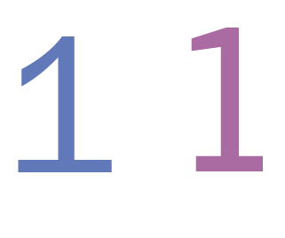

Franklin Gothic and Trade Gothic are very similar in type size and x-height. However, when looking closely ITC Franklin Gothic is narrower and has a slightly smaller x-height. Trade Gothic has a slightly lower decent line and a slightly taller ascent line.

The Franklin Gothic terminal of the ‘a’ expands further down than the Trade Gothic a’s terminal. The top of the bowl of the Franklin Gothic ‘a’ is straighter compared to the Trade Gothic ‘a’ being more curved and at an angle. The shoulder of the Trade Gothic ‘a’ is also taller
The counter for Trade Gothic is larger than Franklin Gothic because the terminals of the c are farther apart while the terminals of the Franklin Gothic “c” are closer together. The Trade Gothic’s shoulder is also taller than the Franklin Gothic’s.
The ‘e’ for both fonts are very similar with only slight differences. The finial for the Trade Gothic ‘e’ comes up a little shorter than the Franklin Gothic’s finial. The other difference is that Trade Gothic ‘e’ has a taller ex-height.
The Franklin Gothic lowercase ‘f’ has a significantly straighter terminal at the end of the stem compared to the Trade Gothic ‘f’. The crossbar also sits higher on the Franklin Gothic ‘f’.
The lower case ‘g’ can be differentiated by the ear of the ‘g’ that is more flat on Trade Gothic, and has a curved appearance on the Franklin Gothic ‘g’. The loops are very similar in size and shape.
The uppercase ‘H’ has a higher crossbar Trade Gothic and also appears wider.
The Trade Gothic lowercase ‘h’ has a taller stem than the Franklin Gothic ‘h.’ The Franklin Gothic shoulder for the ‘h’ is more circular, and it starts out thin and gets thicker. The Trade Gothic ‘h’ has a consistent weight for it’s shoulder, and it has less of a curve compared to the Franklin Gothic ‘h’. The Trade Gothic h’s shoulder also expends out wider.

Franklin Gothic’s lowercase ‘j’ descends lower than Trade Gothic’s. The title also sits higher on the Franklin Gothic ‘j’. The terminal is rounder and sits closer to the baseline on Trade Gothic.
The stem on the uppercase ‘L’ is slightly taller in Trade Gothic than it is for Franklin Gothic. The legs for both types are almost identical, but Trade Gothic’s leg is slightly longer and wider than Franklin Gothic’s ‘L’.
The stem on the lowercase ‘l’ is slightly taller in Trade Gothic than it is for Franklin Gothic.
The only distinguishable difference between Franklin Gothic and Trade Gothic’s ‘o’ is that Trade Gothic’s ‘o’ is slightly taller than Franklin Gothic’s.
The uppercase ‘Q’ tail crosses the line in Trade Gothic and the tail on the Franklin Gothic ‘Q’ only touches the line.
The bowl of the lowercase q for Franklin gothic is more circular than the Trade Gothic ‘q’ that is more of a flattened circle.
The lowercase ‘u’ in Franklin Gothic has a more pronounced stem that the bowl of the ‘u’ attaches to. The Trade Gothic ‘u’ has a rounder aperture and blends seamlessly into the stem. Both stems touch the baseline.
The lowercase ‘w’ share a very similar shape; their vertices line up at the same point. However they vary in x-height; the Franklin Gothic ‘w’ extends above the Trade Gothic ‘w’.
Franklin Gothic’s lowercase ‘y’ is slightly wider than Trade Gothic’s ‘y’, but are otherwise very similar in appearance. The descender on Franklin Gothic dips slightly lower.
Both types use the same square shape for their period. It is difficult to see, but the only difference between the periods is that the Trade Gothic’s period is slightly taller than the Franklin Gothic’s period.
The “+” sign for both fonts are nearly identical, but the weight of Franklin Gothic makes the “+” a little thicker. Trade Gothic’s addition sign’s crossbar also extends a little further on both sides compared to the Franklin Gothic’s addition sign.

The Franklin Gothic ‘1’ has a much shorter type size and shorter, straighter serif. The Trade Gothic ‘1’ serif is curved and dips closer to the mean line.
The Franklin Gothic ‘2’’s spine does not have as much bend compared to the Trade Gothic’s ‘2’ spine. The Franklin Gothic 2’s shoulder does not have as tall of an ascender as the Trade Gothic. The Trade Gothic ‘2’’s shoulder is more narrow than the Franklin Gothic ‘2’.
The ‘8’ for both fonts are very similar but vary slighting in type size, as the cap line for Trade Gothic extends above Franklin Gothic. This makes the top counter of the Trade Gothic larger.
We need to ask Bruno about this one
The Trade Gothic ‘?’ has a more round and circular curve that sits closer to the mean line. The Franklin Gothic ‘?’ is narrower and the curve doesn’t extend as far to the mean line.
The arrows for Franklin gothic can be distinguished by their slightly smaller weight, although their width is very similar to the Trade Gothic arrows.